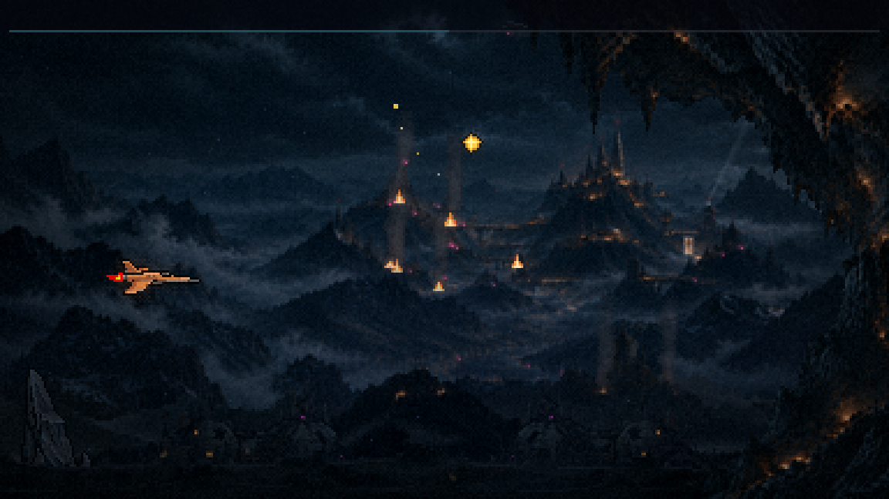
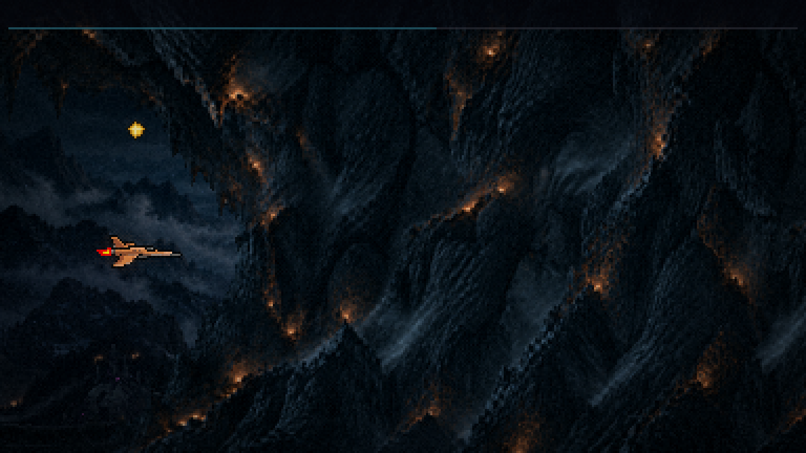
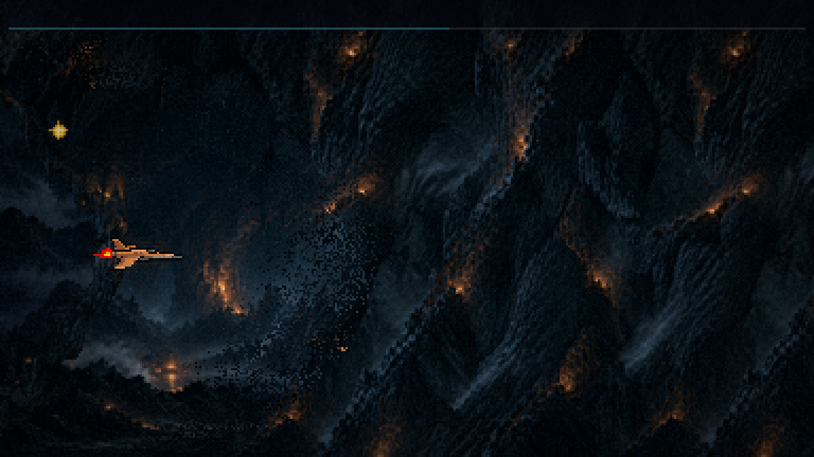
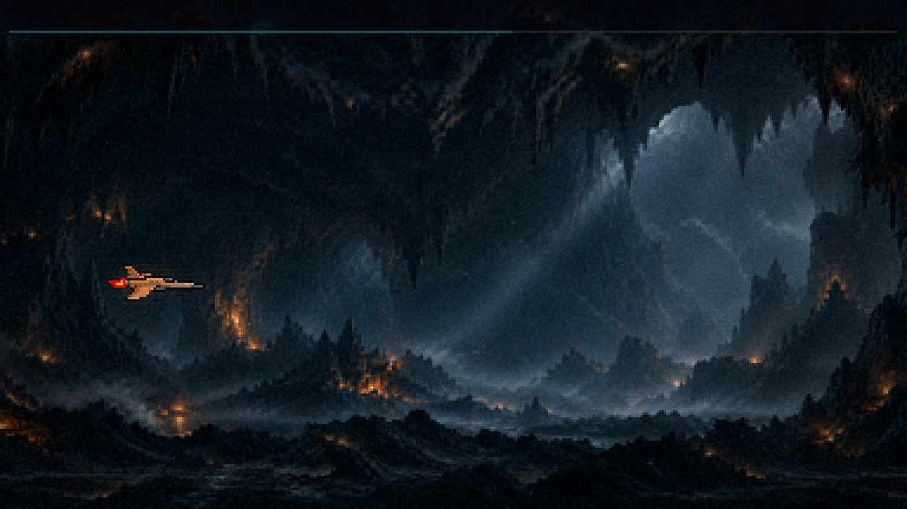
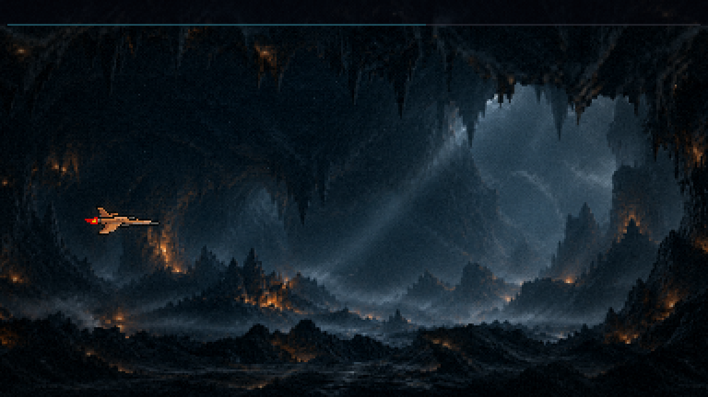
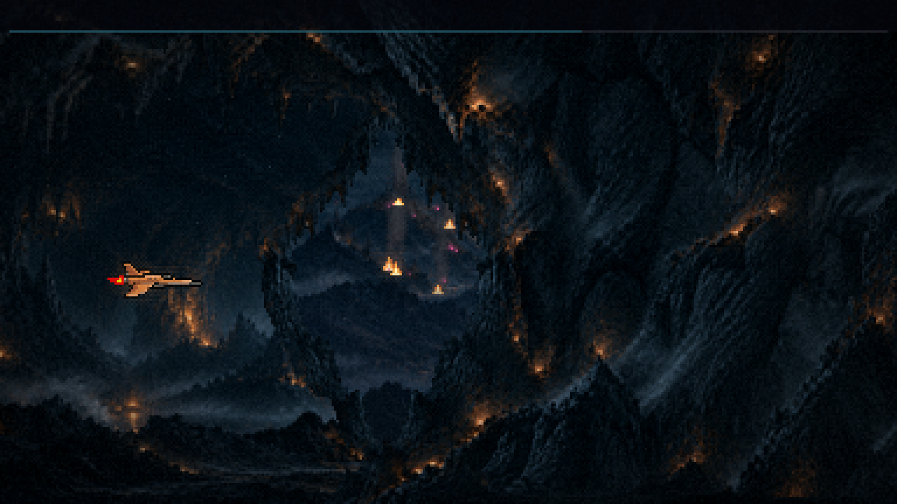
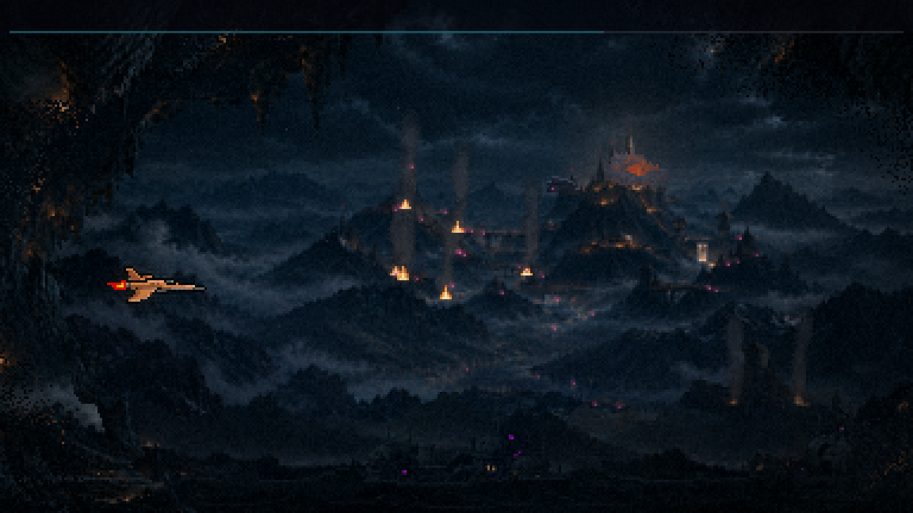
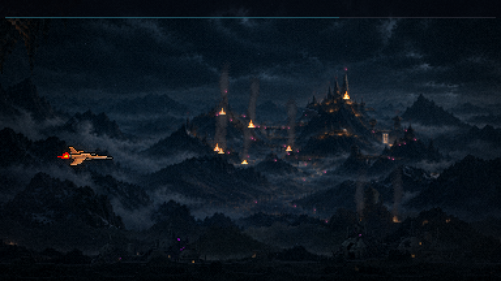
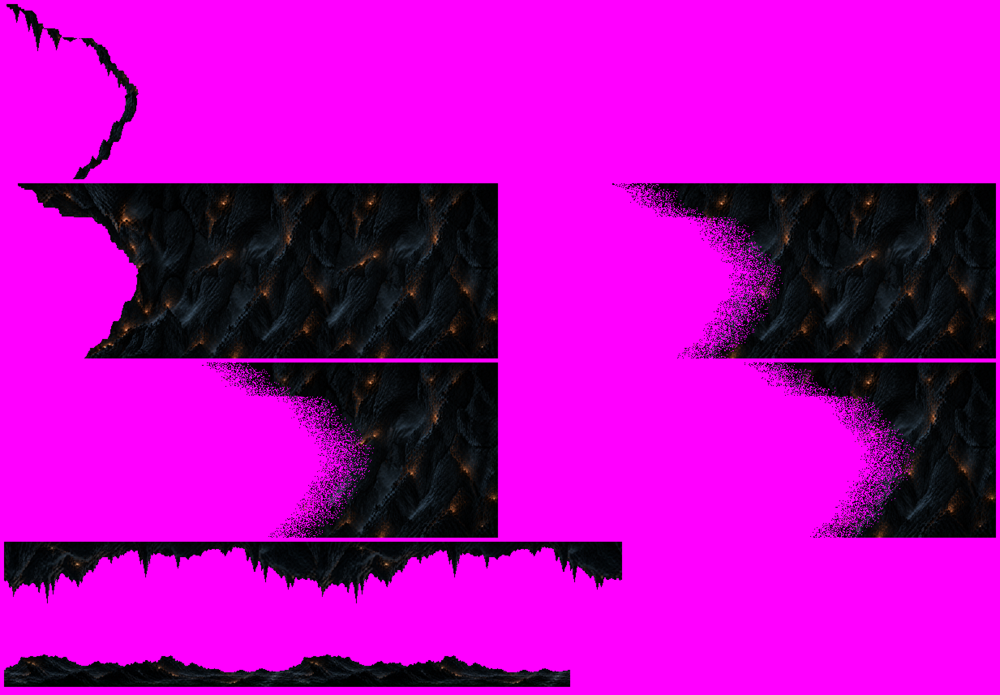

Fase 1 · a caverna · rodada 1 (no jogo)
21/10/2026 · ← a maquete · O portal, o corredor e a saída rodando no jogo, com as suas quatro imagens. A nave está parada no meio do corredor e intocável, e os inimigos escondidos (filmagem). Nada commitado. As três transições, lado a lado (recusadas) · A faixa de rocha · → A rocha da frente (a versão atual).
A passagem, em velocidade real








O que está no jogo
- O trecho é novo: a caverna entra aos 40 s e o resto da fase andou 15 s (o chefão foi de 68 para 83 s). O exterior para de plantar estruturas aos 37 s, para nenhuma aparecer dentro da caverna.
- A entrada e a saída disparam quando a NAVE cruza (no flap ela anda para os lados): a boca, e depois o buraco.
- O fundo da caverna só aparece entre as duas bordas, linha a linha (uma máscara do formato da boca); o entulho e o primeiro plano do exterior somem lá dentro pela mesma máscara invertida.
- O corredor perigoso: o teto e o chão mordem, como a borda da F4. O vão mínimo é de 100 px (o teto chega a y 76, o chão a y 176), sem mexer na sua arte.
- Dentro: só duas ondas pequenas de drones (3 cada). As estalactites e as pontas de rocha como obstáculos são a rodada 2.
- O relógio da invasão pausa enquanto a caverna está aberta (~9 s); o tratamento de imagem troca para o tom da caverna.

O que você decide
- A abertura e o fechamento (o desfazer da rocha, a velocidade).
- O corredor: o vão, o teto e o chão.
- O tamanho do buraco da saída.
- A rodada 2: as estalactites e as pontas de rocha, as brasas tremulando, a cadência de tons.